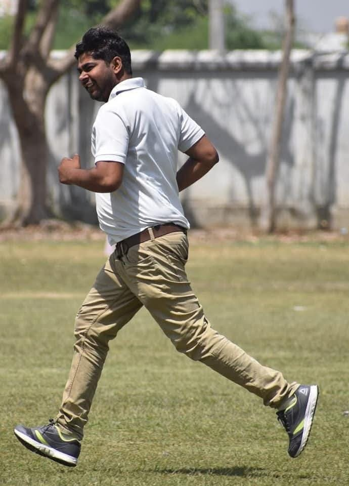

Sports Injury
5 Critical Steps for Returning to Sports After a Ligament Sprain
Learn why progressive strength testing and dynamic stability drills are essential before returning to high-intensity athletic activities.
Consult Our Physios →